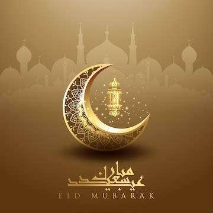
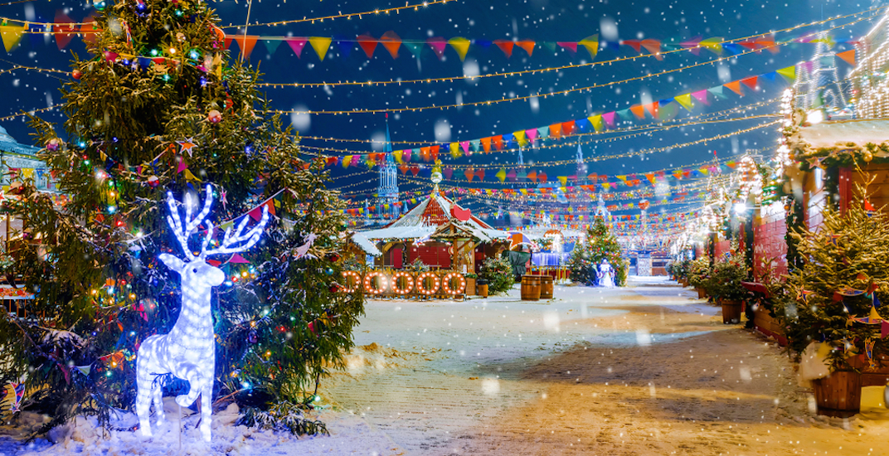
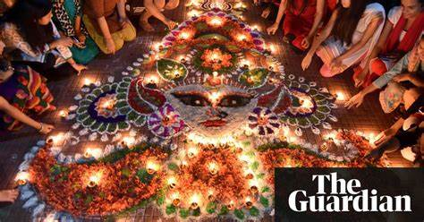
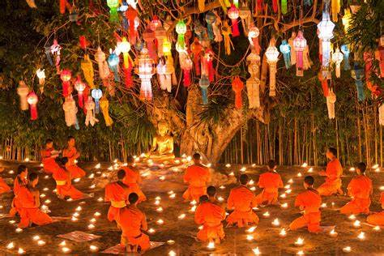

all people of india Celebrate there religion festivel
Eid literally means a “festival” or “feast” in Arabic. There are two major eids in the Islamic calendar per year – Eid al-Fitr earlier in the year and Eid al-Adha later.
Eid al-Fitr is a three-day-long festival and is known as the “Lesser” or “Smaller Eid” when compared to Eid al-Adha, which is four-days-long and is known as the “Greater Eid.”
muslims
>
Christmas is the most pious festival of Christians, but it is celebrated across the world now-a-days irrespective of caste and class. It is celebrated as the birthday of the Lord Jesus Christ, who taught everyone to live a virtuous life. Though it is true that no human being is perfect and people tend to make mistakes almost every moment which causes misunderstanding and disharmony amongst people; but Jesus taught people to follow the path of forgiveness. He assured that whosoever seeks him shall find him. People who follow Christianity follow the path of Jesus Christ and celebrate Christmas festival with great zeal and enthusiasm.
christions
>
hindu
The festival of colours, Holi, is the most vibrant of all Hindu festivals. It marks the end of winter in India and welcomes the spring season. On this festive day, people play with colours, meet and greet one another and create new beginnings. But do you know the real reason why Holi is celebrated? Here’s all you need to know about this colourful festival and what you can look forward to during the upcoming Holi in India.
>
buddist
Wesak is commonly celebrated in May. It is the Buddhist festival that celebrates the birth of the Buddha. Wesak also commemorates the three major events in the Buddha’s life, which were his birth, his
enlightenment
and his death. It is also known as Buddha Day.
>
The Jews have their own holy days. Passover is one of the most important religious festivals in the Jewish calendar.
Jews celebrate the Feast of Passover (Pesach in Hebrew) to commemorate the liberation of the Children of Israel who were led out of Egypt by Moses.